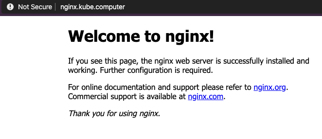

ExternalDNS mit Designate
Um den Aufwand zu reduzieren, und die manuelle Verwaltung Ihrer DNS-Zone zu minimieren, können Sie ExternalDNS verwenden. ExternalDNS ermöglicht Ihnen, DNS-Einträge dynamisch über Kubernetes je nach DNS-Anbieter zu steuern. ExternalDNS ist kein eigenständiger DNS-Server, sondern konfiguriert lediglich DNS-Ressourcen in externen DNS-Providern. Beispielsweise (OpenStack Designate, Amazon Route53, Google Cloud DNS, usw.)
Voraussetzungen
Um diesen Guide erfolgreich abzuschließen brauchen Sie Folgendes:
kubectldie neueste Version- Einen laufenden Kubernetes Cluster, von GKS erstellt mit laufender Machine Deployment
- Siehe hierzu auch: Einen Cluster anlegen
- Eine valide Konfigdatei
kubeconfigfür den Cluster- Siehe hierzu auch: Mit einem Cluster verbinden
- Installierte OpenStack-CLI Werkzeuge
- Einen OpenStack-API-Zugang
Konfigurieren Sie Ihre Domäne zur Verwendung von Designate
Delegieren Sie Ihre Domains von Ihrem externen DNS-Anbieter auf unsere folgenden DNS-Nameserver, damit Designate die DNS-Ressourcen Ihrer Domaine steuern kann.
dns1.ddns.innovo.cloud
dns2.ddns.innovo.cloud
DNS-Zone in OpenStack-Designate anlegen
Bevor Sie ExternalDNS nutzen, müssen Sie Ihre DNS-Zone manuell in Ihrem DNS-Provider anlegen. In unserem Beispiel wird die Zone foobar.cloud. in OpenStack-Designate mithilfe der OpenStack-CLI-Tools wie folgt angelegt:
Hinweis: Fügen Sie immer am Ende Ihrer Zone einen
.an.
$ openstack zone create --email webmaster@foobar.cloud foobar.cloud.
+----------------+--------------------------------------+
| Field | Value |
+----------------+--------------------------------------+
| action | CREATE |
| attributes | |
| created_at | 2018-08-15T06:45:24.000000 |
| description | None |
| email | webmaster@foobar.cloud |
| id | 036ae6e6-6318-47e1-920f-be518d845fb5 |
| masters | |
| name | foobar.cloud. |
| pool_id | bb031d0d-b8ca-455a-8963-50ec70fe57cf |
| project_id | 2b62bc8ff48445f394d0318dbd058967 |
| serial | 1534315524 |
| status | PENDING |
| transferred_at | None |
| ttl | 3600 |
| type | PRIMARY |
| updated_at | None |
| version | 1 |
+----------------+--------------------------------------+
Prüfen Sie, dass die Zone tatsächlich angelegt wurde.
$ openstack zone list
+--------------------------------------+-----------------------+---------+------------+--------+--------+
| id | name | type | serial | status | action |
+--------------------------------------+-----------------------+---------+------------+--------+--------+
| 036ae6e6-6318-47e1-920f-be518d845fb5 | foobar.cloud. | PRIMARY | 1534315524 | ACTIVE | NONE |
+--------------------------------------+-----------------------+---------+------------+--------+--------+
$ openstack zone show foobar.cloud.
+----------------+--------------------------------------+
| Field | Value |
+----------------+--------------------------------------+
| action | NONE |
| attributes | |
| created_at | 2018-08-15T06:45:24.000000 |
| description | None |
| email | webmaster@foobar.cloud |
| id | 036ae6e6-6318-47e1-920f-be518d845fb5 |
| masters | |
| name | foobar.cloud. |
| pool_id | bb031d0d-b8ca-455a-8963-50ec70fe57cf |
| project_id | 2b62bc8ff48445f394d0318dbd058967 |
| serial | 1534315524 |
| status | ACTIVE |
| transferred_at | None |
| ttl | 3600 |
| type | PRIMARY |
| updated_at | 2018-08-15T06:45:30.000000 |
| version | 2 |
+----------------+--------------------------------------+
Die Installation vom ExternalDNS über Helm
Installieren Sie ExternalDNS in Ihrem Cluster. In unserem Beispiel nutzen wir folgendes Helm für die Installation:
- Helm-Installation
$ helm repo add stable https://kubernetes-charts.storage.googleapis.com/$ helm repo update- Legen Sie die Datei
values.yamlan und passen Sie die Werte der Datei an. Für weitere Optionen, siehe: values-external-dns.
## K8s resources type to be observed for new DNS entries by ExternalDNS
##
sources:
- service
- ingress
## DNS provider where the DNS records will be created. Available providers are:
## - aws, azure, cloudflare, coredns, designate, digitalocoean, google, infoblox, rfc2136, transip
##
provider: designate
## Adjust the interval for DNS updates
##
interval: "1m"
## Registry Type. Available types are: txt, noop
## ref: https://github.com/kubernetes-incubator/external-dns/blob/master/docs/proposal/registry.md
##
registry: "txt"
## TXT Registry Identifier, a name that identifies this instance of External-DNS
## This value should not change, while the cluter exists
##
txtOwnerId: "external-dns"
## Modify how DNS records are sychronized between sources and providers (options: sync, upsert-only )
##
policy: sync
## Configure resource requests and limits
## ref: http://kubernetes.io/docs/user-guide/compute-resources/
##
resources:
limits:
memory: 50Mi
cpu: 10m
requests:
memory: 50Mi
cpu: 10m
## Configure your OS Access
##
extraEnv:
- name: OS_AUTH_URL
value: https://identity.optimist.gec.io/v3
- name: OS_REGION_NAME
value: fra
- name: OS_USERNAME
value: "%YOUR_OPENSTACK_USERNAME%"
- name: OS_PASSWORD
value: "%YOUR_OPENSTACK_PASSWORD%"
- name: OS_PROJECT_NAME
value: "%YOUR_OPENSTACK_PROJECT_NAME%"
- name: OS_USER_DOMAIN_NAME
value: Default
$ kubectl create namespace external-dns$ helm upgrade --install external-dns -f values.yaml stable/external-dns --namespace=external-dns
NGINX Deployment starten
Um den Fully Qualified Domain Name (FQDN) bzw. die Domain zu testen, legen Sie beispielsweise dieses Deployment als nginx.yaml an:
apiVersion: apps/v1
kind: Deployment
metadata:
name: nginx
spec:
selector:
matchLabels:
app: nginx
template:
metadata:
labels:
app: nginx
spec:
containers:
- image: nginx
name: nginx
ports:
- containerPort: 80
---
apiVersion: v1
kind: Service
metadata:
name: nginx
annotations:
external-dns.alpha.kubernetes.io/hostname: nginx.foobar.cloud
external-dns.alpha.kubernetes.io/ttl: "60"
spec:
selector:
app: nginx
type: LoadBalancer
ports:
- protocol: TCP
port: 80
targetPort: 80
Nachdem Sie diese Deklarationsdatei angelegt haben, wenden Sie diese an.
kubectl apply -f nginx.yaml
Verifizieren Sie die Ergebnisse
Überprüfen Sie Ihre DNS-Ressourcen in OpenStack. Sie sollten eine ähnliche Liste mit den entsprechenden DNS-Einträgen sehen.
openstack recordset list foobar.cloud.
Warten Sie ein paar Minuten und testen Sie dann die Verfügbarkeit über das Internet. Rufen Sie Ihre Webseite auf. Dort sollten Sie Folgendes in Ihrem Browser sehen.

Zusammenfassung
Sie haben folgende Inhaltspunkte erfolgreich abgeschlossen:
- Was ist ExternalDNS und wie ist diese im Kubernetes-Cluster zu installieren
- Die Konfiguration vom ExternalDNS über Helm, um OpenStack Designate anzusprechen
- Die Erstellung eines NGINX-Deployments und das Testen der Konnektivität
Herzlichen Glückwunsch! Sie kennen nun alle notwendigen Schritte, um in Kubernetes dynamische DNS-Ressourcen zu steuern.